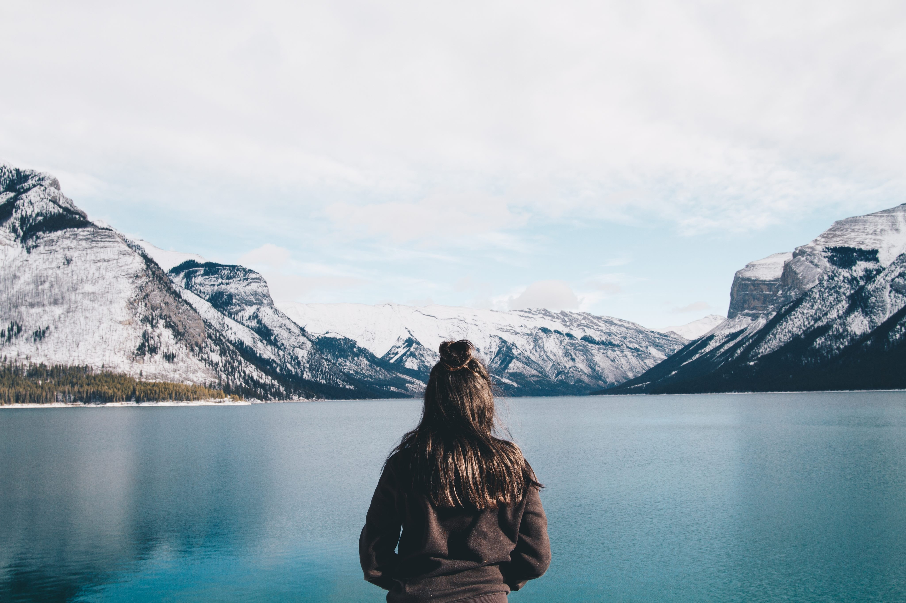

Alberta
Alberta (/ælˈbɜːrtə/ (About this sound listen)) is a western province of Canada. With an estimated population of 4,067,175 as of 2016 census, it is Canada's fourth-most populous province and the most populous of Canada's three prairie provinces. Its area is about 660,000 square kilometres (250,000 sq mi). Alberta and its neighbour Saskatchewan were districts of the Northwest Territories until they were established as provinces on September 1, 1905. The premier has been Rachel Notley since May 2015.
Alberta is bounded by the provinces of British Columbia to the west and Saskatchewan to the east, the Northwest Territories to the north, and the U.S. state of Montana to the south. Alberta is one of three Canadian provinces and territories to border only a single U.S. state and one of only two landlocked provinces. It has a predominantly humid continental climate, with stark contrasts over a year; but seasonal temperature average swings are smaller than in areas further east, due to winters being warmed by occasional chinook winds bringing sudden warming. 
Alberta's capital, Edmonton, is near the geographic centre of the province and is the primary supply and service hub for Canada's crude oil, the Athabasca oil sands and other northern resource industries.
About 290 km (180 mi) south of the capital is Calgary, the largest city in Alberta. Calgary and Edmonton centre Alberta's two census metropolitan areas, both of which have populations exceeding one million, while the province has 16 census agglomerations.
Tourist destinations in the province include Banff, Canmore, Drumheller, Jasper and Sylvan Lake.